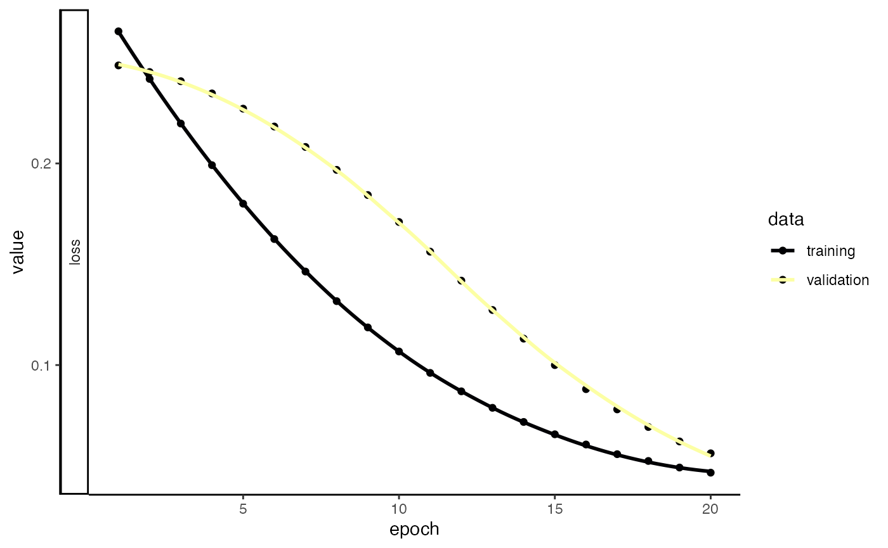
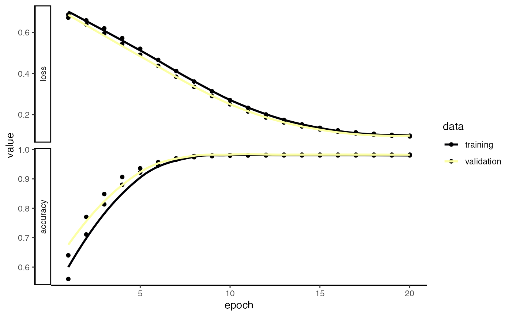

vignettes/articles/immApex.Rmd
immApex.RmdimmApex is meant to serve as an API for deep-learning models based on immune receptor sequencing. These functions extract or generate amino acid or nucleotide sequences and prepare them for deep learning tasks through Keras. immApex is the underlying structure for the BCR models in Ibex and TCR models in Trex. It should be noted that the tools here are created for immune receptor sequences; they will work more generally for nucleotide or amino acid sequences. The package itself supports AIRR, Adaptive, and 10x formats and interacts with the scRepertoire R package.
More information is available at the immApex GitHub Repo.
Generating synthetic sequences is a quick way to start testing the
model code. generateSequences() can also generate realistic
noise for generative adversarial networks.
Parameters for generateSequences()
sequences <- generateSequences(prefix.motif = "CAS",
suffix.motif = "YF",
number.of.sequences = 1000,
min.length = 8,
max.length = 16)
head(sequences)## [1] "CASTCTMLANRYF" "CASFTKNEEETYF" "CASDGSGVAHHYF" "CASDILAYWYEYF"
## [5] "CASADIMWPLCWYF" "CASHIPRENTYATFYF"If we want to generate nucleotide sequences instead of amino acids, we must to change the sequence.dictionary.
nucleotide.sequences <- generateSequences(number.of.sequences = 1000,
min.length = 8,
max.length = 16,
sequence.dictionary = c("A", "C", "T", "G"))
head(nucleotide.sequences)## [1] "TGGTAGTG" "TGTTGTTTGGGGTACG" "GACCCTCCTG" "GGTCCCATGTCGCAT"
## [5] "CAAGAATTAGGCTC" "AGCTCGTGCTATCT"In addition to making random sequences with
generateSequences(), we can also use generative deep
learning to simulate similar, de novo sequences with
variationalSequences(). variationalSequences()
uses a variational autoencoder that allows for sampling and generation
of sequences similar to the input sequences.
It should be noted that the success of this approach is highly
dependent on the number of sequences used as input and the
hyperparameters of the model. As such,
variationalSequences() has a number of arguments to modify
to allow for optimization.
Parameters for `variationalSequences()
propertyEncoder()
variational.sequences <- variationalSequences(sequences, encoder = "onehotEncoder", number.of.sequences = 100,
encoder.hidden.dim = c(256, 128), latent.dim = 16, batch.size = 16, call.threshold = 0.1)## 4/4 - 0s - 9ms/step
head(variational.sequences)## [1] "CASQARHMRSNY..F" "CASDCVI.NKIYF" "CASASIH.PFCDVFYF" "CAS.NACQGVITYF"
## [5] "CAS.QPSYTHGTYF" "CASCHWNNI.M..YF"A common approach is to mutate sequences randomly or at specific
intervals. This can be particularly helpful if we have fewer sequences
or want to test a model for accuracy given new, altered sequences.
mutateSequences() allows us to tune the type of mutation,
where along the sequences to introduce the mutation and the overall
number of mutations.
Parameters for mutateSequences()
mutated.sequences <- mutateSequences(sequences,
n.sequence = 1,
position.start = 3,
position.end = 8)
head(sequences)## [1] "CASTCTMLANRYF" "CASFTKNEEETYF" "CASDGSGVAHHYF" "CASDILAYWYEYF"
## [5] "CASADIMWPLCWYF" "CASHIPRENTYATFYF"
head(mutated.sequences)## [1] "CASTITMLANRYF" "CASFTTNEEETYF" "CAMDGSGVAHHYF" "CASDGLAYWYEYF"
## [5] "CASPDIMWPLCWYF" "CASYIPRENTYATFYF"Immune receptor nomenclature can be highly variable across sequencing
platforms. When preparing data for models, we can use
`formatGenes() to universalize the gene formats into IMGT
nomenclature.
Parameters for formatGenes()
Here, we will use the built-in example from Adaptive Biotechnologies
and reformat and simplify the v region.
formatGenes() will add 2 columns to the end of the data
frame per region selected - 1) v_IMGT will be the
formatted gene calls and 2) v_IMGT.check is a binary
for if the formatted region appears in the IMGT database. In the example
below, “TRBV2-1” is not recognized as a designation within IMGT.
data("immapex_example.data")
Adaptive_example <- formatGenes(immapex_example.data[["Adaptive"]],
region = "v",
technology = "Adaptive",
simplify.format = TRUE)
head(Adaptive_example[,c("aminoAcid","vGeneName", "v_IMGT", "v_IMGT.check")])## aminoAcid vGeneName v_IMGT v_IMGT.check
## 4490 CASSQDGPSGIETQYF TCRBV04-02 TRBV4-2 1
## 18266 CASSEGSNQPQHF TCRBV02-01 TRBV2-1 0
## 22061 CSASAGDMVTEAFF TCRBV20-01 TRBV20-1 1
## 22174 CASSQDPGETDTQYF TCRBV03-01 TRBV3-1 1
## 19117 CATSAWTGELFF TCRBV24-01 TRBV24-1 1
## 2659 CATSVPGQETQYF TCRBV24-01 TRBV24-1 1Depending on the sequencing technology and the version, we might want
to expand the length of our sequence embedding approach. The first step
in the process is pulling the reference sequences from the
ImMunoGeneTics (IMGT) system using getIMGT(). More
information for IMGT can be found at imgt.org. Data from IMGT is under a CC
BY-NC-ND 4.0 license. Please be aware that attribution is required for
usage and should not be used to create commercial or derivative
work.
Parameters for getIMGT()
Here, we will use the getIMGT() function to get the
amino acid sequences for the TRBV region to get all the sequences by V
gene allele.
TRBV_aa <- getIMGT(species = "human",
chain = "TRB",
frame = "inframe",
region = "v",
sequence.type = "aa")
TRBV_aa[[1]][1]## $`TRBV1*01`
## [1] "TRBVHPVREGIONAADTGITQTPKYLVTAMGSKRTMKREHLGHDSMYWYRQKAKKSLEFMFYYNCKEFIENKTVPNHFTPECPDSSRLYLHVVALQQEDSAAYLCTSSQ"We can now use inferCDR() to add additional sequence
elements to our example data using the outputs of
formatGenes() and getIMGT(). Here, we will use
the function to isolate the complementarity-determining regions (CDR) 1
and 2. If the gene nomenclature does not match the IMGT the result will
be NA for the given sequences. Likewise, if the IMGT nomenclature has
been simplified, the first allelic match will be used for sequence
extraction.
Parameters for inferCDR
getIMGT()
Adaptive_example <- inferCDR(Adaptive_example,
chain = "TRB",
reference = TRBV_aa,
technology = "Adaptive",
sequence.type = "aa",
sequences = c("CDR1", "CDR2"))
Adaptive_example[200:210,c("CDR1_IMGT", "CDR2_IMGT")]## CDR1_IMGT CDR2_IMGT
## 200 IIEKRQSVAFWC QGPKLLIQFQ
## 201 IIEKRQSVAFWC QGPKLLIQFQ
## 202 IIEKRQSVAFWC QGPKLLIQFQ
## 203 IIEKRQSVAFWC QGPKLLIQFQ
## 204 IIEKRQSVAFWC QGPKLLIQFQ
## 205 IIEKRQSVAFWC QGPKLLIQFQ
## 206 IIEKRQSVAFWC QGPKLLIQFQ
## 207 IIEKRQSVAFWC QGPKLLIQFQ
## 208 IIEKRQSVAFWC QGPKLLIQFQ
## 209 IIEKRQSVAFWC QGPKLLIQFQ
## 210 IIEKRQSVAFWC QGPKLLIQFQOne hot encoding of amino acid or nucleotide sequences is a common method for transforming sequences into numeric matrices compatible with Keras (or other workflows).
Parameters for onehotEncoder()
sequence.matrix <- onehotEncoder(input.sequences = c(sequences, mutated.sequences),
convert.to.matrix = TRUE)
head(sequence.matrix[,1:20])## Pos.1_A Pos.1_R Pos.1_N Pos.1_D Pos.1_C Pos.1_Q Pos.1_E Pos.1_G Pos.1_H
## [1,] 0 0 0 0 1 0 0 0 0
## [2,] 0 0 0 0 1 0 0 0 0
## [3,] 0 0 0 0 1 0 0 0 0
## [4,] 0 0 0 0 1 0 0 0 0
## [5,] 0 0 0 0 1 0 0 0 0
## [6,] 0 0 0 0 1 0 0 0 0
## Pos.1_I Pos.1_L Pos.1_K Pos.1_M Pos.1_F Pos.1_P Pos.1_S Pos.1_T Pos.1_W
## [1,] 0 0 0 0 0 0 0 0 0
## [2,] 0 0 0 0 0 0 0 0 0
## [3,] 0 0 0 0 0 0 0 0 0
## [4,] 0 0 0 0 0 0 0 0 0
## [5,] 0 0 0 0 0 0 0 0 0
## [6,] 0 0 0 0 0 0 0 0 0
## Pos.1_Y Pos.1_V
## [1,] 0 0
## [2,] 0 0
## [3,] 0 0
## [4,] 0 0
## [5,] 0 0
## [6,] 0 0An alternative to one hot encoding is transforming the sequences into an array/matrix of numerical values using amino acid properties.
These properties are largely based on dimensional reduction strategies, but it is essential to know the assumptions for each approach (links to original work below). Important to note: this encoding strategy is specific for amino acids.
method.to.use
property.matrix <- propertyEncoder(input.sequences = c(sequences, mutated.sequences),
method.to.use = "FASGAI",
convert.to.matrix = TRUE)
head(property.matrix[,1:20])## Pos.1_F1 Pos.1_F2 Pos.1_F3 Pos.1_F4 Pos.1_F5 Pos.1_F6 Pos.2_F1
## [1,] 0.8189626 0.6210147 0.06362416 0 0.063684 0.5042316 0.5475782
## [2,] 0.8189626 0.6210147 0.06362416 0 0.063684 0.5042316 0.5475782
## [3,] 0.8189626 0.6210147 0.06362416 0 0.063684 0.5042316 0.5475782
## [4,] 0.8189626 0.6210147 0.06362416 0 0.063684 0.5042316 0.5475782
## [5,] 0.8189626 0.6210147 0.06362416 0 0.063684 0.5042316 0.5475782
## [6,] 0.8189626 0.6210147 0.06362416 0 0.063684 0.5042316 0.5475782
## Pos.2_F2 Pos.2_F3 Pos.2_F4 Pos.2_F5 Pos.2_F6 Pos.3_F1 Pos.3_F2
## [1,] 0.8428057 0.1736913 0.8702309 0.2374043 0.2587973 0.3064239 0.3803715
## [2,] 0.8428057 0.1736913 0.8702309 0.2374043 0.2587973 0.3064239 0.3803715
## [3,] 0.8428057 0.1736913 0.8702309 0.2374043 0.2587973 0.3064239 0.3803715
## [4,] 0.8428057 0.1736913 0.8702309 0.2374043 0.2587973 0.3064239 0.3803715
## [5,] 0.8428057 0.1736913 0.8702309 0.2374043 0.2587973 0.3064239 0.3803715
## [6,] 0.8428057 0.1736913 0.8702309 0.2374043 0.2587973 0.3064239 0.3803715
## Pos.3_F3 Pos.3_F4 Pos.3_F5 Pos.3_F6 Pos.4_F1 Pos.4_F2
## [1,] 0.1548993 0.6681727 0.2317614 0.3772829 0.46547578 0.4904353
## [2,] 0.1548993 0.6681727 0.2317614 0.3772829 0.90484370 0.6964236
## [3,] 0.1548993 0.6681727 0.2317614 0.3772829 0.03057369 0.4920987
## [4,] 0.1548993 0.6681727 0.2317614 0.3772829 0.03057369 0.4920987
## [5,] 0.1548993 0.6681727 0.2317614 0.3772829 0.54757815 0.8428057
## [6,] 0.1548993 0.6681727 0.2317614 0.3772829 0.38371694 0.7429997propertyEncoder() also allows us to use multiple
approaches simultaneously by setting method.to.use as a
vector.
mulit.property.matrix <- propertyEncoder(input.sequences = c(sequences, mutated.sequences),
method.to.use = c("atchleyFactors", "kideraFactors"),
convert.to.matrix = TRUE)
head(mulit.property.matrix[,1:20])## Pos.1_AF1 Pos.1_AF2 Pos.1_AF3 Pos.1_AF4 Pos.1_AF5 Pos.1_KF1 Pos.1_KF2
## [1,] 0 0.551818 0.4960678 0.2994783 0.4864792 0.4640884 0.2635468
## [2,] 0 0.551818 0.4960678 0.2994783 0.4864792 0.4640884 0.2635468
## [3,] 0 0.551818 0.4960678 0.2994783 0.4864792 0.4640884 0.2635468
## [4,] 0 0.551818 0.4960678 0.2994783 0.4864792 0.4640884 0.2635468
## [5,] 0 0.551818 0.4960678 0.2994783 0.4864792 0.4640884 0.2635468
## [6,] 0 0.551818 0.4960678 0.2994783 0.4864792 0.4640884 0.2635468
## Pos.1_KF3 Pos.1_KF4 Pos.1_KF5 Pos.1_KF6 Pos.1_KF7 Pos.1_KF8 Pos.1_KF9
## [1,] 0.5643836 0.1511628 0.2675676 1 1 0.3454936 0.8553616
## [2,] 0.5643836 0.1511628 0.2675676 1 1 0.3454936 0.8553616
## [3,] 0.5643836 0.1511628 0.2675676 1 1 0.3454936 0.8553616
## [4,] 0.5643836 0.1511628 0.2675676 1 1 0.3454936 0.8553616
## [5,] 0.5643836 0.1511628 0.2675676 1 1 0.3454936 0.8553616
## [6,] 0.5643836 0.1511628 0.2675676 1 1 0.3454936 0.8553616
## Pos.1_KF10 Pos.2_AF1 Pos.2_AF2 Pos.2_AF3 Pos.2_AF4 Pos.2_AF5
## [1,] 0.8661616 0.2366665 0.06143816 0.5124824 1 0.5043415
## [2,] 0.8661616 0.2366665 0.06143816 0.5124824 1 0.5043415
## [3,] 0.8661616 0.2366665 0.06143816 0.5124824 1 0.5043415
## [4,] 0.8661616 0.2366665 0.06143816 0.5124824 1 0.5043415
## [5,] 0.8661616 0.2366665 0.06143816 0.5124824 1 0.5043415
## [6,] 0.8661616 0.2366665 0.06143816 0.5124824 1 0.5043415If, instead, we would like to get the set of summarized values across all amino acid residues for a given method.to.use, we can use summary.function and select “median”, “mean”, “sum”, variance (“vars”), or Median Absolute Deviation (“mads”).
median.property.matrix <- propertyEncoder(input.sequences = c(sequences, mutated.sequences),
method.to.use = "crucianiProperties",
summary.function = "median")
head(median.property.matrix[,1:3])## PP1 PP2 PP3
## [1,] 0.1575 0.1975 0.5525
## [2,] 0.6775 0.2225 0.3050
## [3,] 0.0675 0.1050 0.6250
## [4,] 0.1500 0.2475 0.3900
## [5,] 0.0925 0.2825 0.4050
## [6,] 0.6550 0.2825 0.5525One approach to encoding amino acid sequences is geometric isometry, such as GIANA.
Parameters for geometricEncoder()
geometric.matrix <- geometricEncoder(sequences,
method.to.use = "BLOSUM62",
theta = pi/3)
head(geometric.matrix)## [,1] [,2] [,3] [,4] [,5] [,6]
## [1,] -0.9326427 -0.53846154 -2.2320508 -0.13397460 -0.8838755 -0.7767751
## [2,] -1.1352562 -0.03367863 -0.8969426 0.01508865 -1.0920117 0.9683429
## [3,] -1.3989641 -0.80769231 -1.3172581 0.12771185 -1.4992601 0.2891023
## [4,] -1.9346642 -0.49521709 -2.3886584 0.75266228 -1.4889543 0.1174061
## [5,] -2.1057687 -0.63841587 -2.9010526 0.88191339 -1.3608971 -0.7857143
## [6,] -1.1930286 -0.18361389 -1.7906647 -0.02347777 -1.4597754 0.5284052
## [,7] [,8] [,9] [,10] [,11] [,12]
## [1,] -2.5115873 0.50404299 -1.491716 0.7375736 -1.373570 -0.08244591
## [2,] -1.5603546 -0.98969426 -1.850197 -0.1799805 -1.207396 1.16819488
## [3,] -0.9100098 0.80695239 -1.465581 -0.8461538 -2.227268 0.93466424
## [4,] -2.5191316 0.05557168 -1.194329 0.3763311 -1.888658 -0.11336312
## [5,] -2.8557687 0.66062224 -1.635165 1.1179025 -2.027335 -0.34569614
## [6,] -2.2091742 -0.04859801 -1.270032 -0.3002405 -1.684655 0.54290834
## [,13] [,14] [,15] [,16] [,17] [,18]
## [1,] -0.8866369 -0.15660757 -1.1050789 1.760207 -1.5218931 -1.0563116
## [2,] -1.2430965 0.61464470 -0.8564596 1.637278 -1.5988161 -0.9230769
## [3,] -1.5583331 0.69911210 -0.8949211 1.703895 -2.1935893 -0.2005919
## [4,] -0.2513807 0.74309646 -1.8584811 1.680522 -0.8715482 0.7403351
## [5,] -0.5497252 0.09500907 -1.6708789 1.179761 -0.6237179 0.7945968
## [6,] -0.9330127 0.61602540 -1.0518829 1.196915 -1.6405445 -0.6584936
## [,19] [,20]
## [1,] -1.0507888 0.2815580
## [2,] -1.4017255 -0.1875248
## [3,] -1.4298813 -0.2926037
## [4,] -0.3097138 -1.1558676
## [5,] -0.9208789 -0.1192766
## [6,] -0.9201520 -0.5312500Another approach to transforming a sequence into numerical values is tokenizing it into numbers. This is a common approach for recurrent neural networks where one letter corresponds to a single integer. In addition, we can add start and stop tokens to our original sequences to differentiate between the beginning and end of the sequences.
Parameters for tokenizeSequences()
token.matrix <- tokenizeSequences(input.sequences = c(sequences, mutated.sequences),
add.startstop = TRUE,
start.token = "!",
stop.token = "^",
convert.to.matrix = TRUE)
head(token.matrix[,1:18])## [,1] [,2] [,3] [,4] [,5] [,6] [,7] [,8] [,9] [,10] [,11] [,12]
## CASTCTMLANRYF 1 6 2 17 18 6 18 14 12 2 4 3
## CASFTKNEEETYF 1 6 2 17 15 18 13 4 8 8 8 18
## CASDGSGVAHHYF 1 6 2 17 5 9 17 9 21 2 10 10
## CASDILAYWYEYF 1 6 2 17 5 11 12 2 20 19 20 8
## CASADIMWPLCWYF 1 6 2 17 2 5 11 14 19 16 12 6
## CASHIPRENTYATFYF 1 6 2 17 10 11 16 3 8 4 18 20
## [,13] [,14] [,15] [,16] [,17] [,18]
## CASTCTMLANRYF 20 15 22 23 23 23
## CASFTKNEEETYF 20 15 22 23 23 23
## CASDGSGVAHHYF 20 15 22 23 23 23
## CASDILAYWYEYF 20 15 22 23 23 23
## CASADIMWPLCWYF 19 20 15 22 23 23
## CASHIPRENTYATFYF 2 18 15 20 15 22Another method for encoding a group of sequences is to calculate the
positional probability of sequences using
probabilityMatrixs(). This function could represent a
collection of antigen-specific sequences or even work on embedding a
total repertoire.
ppm.matrix <- probabilityMatrix(sequences)
head(ppm.matrix)## Pos.1 Pos.2 Pos.3 Pos.4 Pos.5 Pos.6 Pos.7 Pos.8 Pos.9 Pos.10 Pos.11 Pos.12
## A 0 1 0 0.055 0.063 0.054 0.041 0.042 0.051 0.059 0.060 0.044
## R 0 0 0 0.050 0.053 0.045 0.044 0.059 0.058 0.052 0.057 0.035
## N 0 0 0 0.057 0.058 0.043 0.054 0.050 0.044 0.065 0.046 0.029
## D 0 0 0 0.062 0.057 0.049 0.056 0.055 0.054 0.049 0.054 0.045
## C 1 0 0 0.048 0.042 0.054 0.056 0.049 0.050 0.035 0.050 0.042
## Q 0 0 0 0.051 0.049 0.057 0.046 0.050 0.056 0.049 0.048 0.030
## Pos.13 Pos.14 Pos.15 Pos.16
## A 0.023 0.011 0 0
## R 0.022 0.013 0 0
## N 0.027 0.014 0 0
## D 0.020 0.014 0 0
## C 0.025 0.014 0 0
## Q 0.020 0.013 0 0In addition, probabilityMatrix() can convert the
positional probability matrix into a positional weight matrix using
log-likelihood using the argument convert.PWM = TRUE.
We can provide a set of background frequencies for the amino acids with
background.frequencies or leave this blank to assume a
uniform distribution for all amino acids. Here, we are going to use an
example background.
set.seed(42)
back.freq <- sample(1:1000, 20)
back.freq <- back.freq/sum(back.freq)
pwm.matrix <- probabilityMatrix(sequences,
max.length = 20,
convert.PWM = TRUE,
background.frequencies = back.freq)
head(pwm.matrix)## Pos.1 Pos.2 Pos.3 Pos.4 Pos.5 Pos.6 Pos.7
## A -6.157338 3.809888 -6.157338 -0.3499835 -0.1573384 -0.3759787 -0.7650210
## R -6.986931 -6.986931 -6.986931 -1.3145058 -1.2320437 -1.4633692 -1.4950781
## N -5.351911 -5.351911 -5.351911 0.5060700 0.5307321 0.1075207 0.4294488
## D -4.282869 -4.282869 -4.282869 1.6944106 1.5751117 1.3609869 1.5500207
## C 6.732291 -3.234935 -3.234935 2.3797750 2.1913299 2.5464249 2.5979552
## Q -4.858371 -4.858371 -4.858371 0.8420682 0.7854847 0.9996095 0.6962174
## Pos.8 Pos.9 Pos.10 Pos.11 Pos.12 Pos.13 Pos.14
## A -0.7310737 -0.4568987 -0.2504478 -0.2266011 -0.66548534 -1.5723759 -2.5723759
## R -1.0800406 -1.1042881 -1.2590107 -1.1289502 -1.81700617 -2.4633692 -3.1795762
## N 0.3205144 0.1399421 0.6924832 0.2026779 -0.44502037 -0.5445560 -1.4450204
## D 1.5244856 1.4984904 1.3609869 1.4984904 1.24069264 0.1094481 -0.3759787
## C 2.4089214 2.4374905 1.9349902 2.4374905 2.19132992 1.4655049 0.6719558
## Q 0.8140539 0.9745185 0.7854847 0.7563384 0.09582482 -0.4660541 -1.0510166
## Pos.15 Pos.16 Pos.17 Pos.18 Pos.19 Pos.20
## A -6.157338 -6.157338 -6.157338 -6.157338 -6.157338 -6.157338
## R -6.986931 -6.986931 -6.986931 -6.986931 -6.986931 -6.986931
## N -5.351911 -5.351911 -5.351911 -5.351911 -5.351911 -5.351911
## D -4.282869 -4.282869 -4.282869 -4.282869 -4.282869 -4.282869
## C -3.234935 -3.234935 -3.234935 -3.234935 -3.234935 -3.234935
## Q -4.858371 -4.858371 -4.858371 -4.858371 -4.858371 -4.858371Similar to the positional probability, we can also summarize a given
set of sequences by the frequency of adjacency for a given set of amino
acid or nucleotide residues using adjacencyMatrix(). For
this function, a matrix of n x n (defined by the length of
sequence.dictionary) is created and the number of times
a residue is adjacent to one another is calculated. We can
normalize the values using the total number of residues
evaluated.
adj.matrix <- adjacencyMatrix(sequences,
normalize = FALSE)
adj.matrix## A R N D C Q E G H I L K M F P S T W Y V
## A 34 56 40 37 1052 51 47 51 48 47 39 50 42 38 47 1089 37 49 113 39
## R 56 56 54 52 39 36 34 36 42 42 52 41 41 28 50 97 50 39 90 41
## N 40 54 44 48 37 52 45 48 31 40 43 42 43 34 44 100 49 50 92 38
## D 37 52 48 34 36 50 47 47 40 41 44 46 36 41 42 116 61 45 110 57
## C 1052 39 37 36 44 43 46 41 40 40 49 48 38 32 44 87 42 39 84 49
## Q 51 36 52 50 43 34 47 43 48 48 38 42 38 31 43 96 34 43 77 44
## E 47 34 45 47 46 47 52 48 38 41 37 33 44 36 41 92 50 45 111 36
## G 51 36 48 47 41 43 48 42 38 32 30 42 50 37 49 102 40 57 80 29
## H 48 42 31 40 40 48 38 38 28 39 42 48 35 45 47 99 52 34 72 46
## I 47 42 40 41 40 48 41 32 39 44 39 40 43 35 43 71 32 49 90 38
## L 39 52 43 44 49 38 37 30 42 39 36 43 36 39 47 82 42 51 97 36
## K 50 41 42 46 48 42 33 42 48 40 43 38 38 45 36 82 40 42 100 40
## M 42 41 43 36 38 38 44 50 35 43 36 38 38 32 35 86 40 40 78 45
## F 38 28 34 41 32 31 36 37 45 35 39 45 32 34 40 78 41 32 1082 34
## P 47 50 44 42 44 43 41 49 47 43 47 36 35 40 52 113 38 47 110 34
## S 1089 97 100 116 87 96 92 102 99 71 82 82 86 78 113 166 88 88 131 95
## T 37 50 49 61 42 34 50 40 52 32 42 40 40 41 38 88 50 43 106 39
## W 49 39 50 45 39 43 45 57 34 49 51 42 40 32 47 88 43 56 105 36
## Y 113 90 92 110 84 77 111 80 72 90 97 100 78 1082 110 131 106 105 146 66
## V 39 41 38 57 49 44 36 29 46 38 36 40 45 34 34 95 39 36 66 38We have a function called sequenceDecoder() that
extracts sequences from one-hot or property-encoded matrices or arrays.
This function can be applied to any generative approach to sequence
generation.
Parameters for sequenceDecoder()
propertyEncoder(). This will be ignored if
encoder = “onehotEncoder”
property.matrix <- propertyEncoder(input.sequences = c(sequences, mutated.sequences), method.to.use = "FASGAI",
convert.to.matrix = TRUE)
property.sequences <- sequenceDecoder(property.matrix, encoder = "propertyEncoder", aa.method.to.use = "FASGAI",
call.threshold = 1)
head(sequences)## [1] "CASTCTMLANRYF" "CASFTKNEEETYF" "CASDGSGVAHHYF" "CASDILAYWYEYF"
## [5] "CASADIMWPLCWYF" "CASHIPRENTYATFYF"
head(property.sequences)## [1] "CASTCTMLANRYF" "CASFTKNEEETYF" "CASDGSGVAHHYF" "CASDILAYWYEYF"
## [5] "CASADIMWPLCWYF" "CASHIPRENTYATFYF"A similar approach can be applied when using matrices or arrays derived from one-hot encoding:
sequence.matrix <- onehotEncoder(input.sequences = c(sequences, mutated.sequences), convert.to.matrix = TRUE)
OHE.sequences <- sequenceDecoder(sequence.matrix, encoder = "onehotEncoder")
head(OHE.sequences)## [1] "CASTCTMLANRYF" "CASFTKNEEETYF" "CASDGSGVAHHYF" "CASDILAYWYEYF"
## [5] "CASADIMWPLCWYF" "CASHIPRENTYATFYF"For the vignette - we will use an autoencoder for sequence embedding.
The code below is based on the Trex R package. The overall
structure of the autoencoder is the same. However, some of the
parameters are modified for the sake of the vignette. We will use the
sequence.matrix we generated above from the
onehotEncoder().
The steps to train the model include:
#Sampling to make Training/Validation Data Cohorts
set.seed(42)
num_sequences <- nrow(sequence.matrix)
indices <- 1:num_sequences
train_indices <- sample(indices, size = floor(0.8 * num_sequences))
val_indices <- setdiff(indices, train_indices)
x_train <- sequence.matrix[train_indices,]
x_val <- sequence.matrix[val_indices,]
# Parameters
input_shape <- dim(x_train)[2]
epochs <- 20
batch_size <- 128
encoding_dim <- 40
hidden_dim1 <- 256 # Hidden layer 1 size
hidden_dim2 <- 128 # Hidden layer 2 size
es <- callback_early_stopping(monitor = "val_loss",
min_delta = 0,
patience = 4,
verbose = 1,
mode = "min")
# Define the Model
input_seq <- layer_input(shape = c(input_shape))
# Encoder Layers
encoded <- input_seq %>%
layer_dense(units = hidden_dim1, name = "e.1") %>%
layer_batch_normalization(name = "bn.1") %>%
layer_activation('leaky_relu', name = "act.1") %>%
layer_dense(units = hidden_dim2, name = "e.2") %>%
layer_batch_normalization(name = "bn.2") %>%
layer_activation('leaky_relu', name = "act.2") %>%
layer_dense(units = encoding_dim, activation = 'selu', name = "latent")
# Decoder Layers
decoded <- encoded %>%
layer_dense(units = hidden_dim2, name = "d.2") %>%
layer_batch_normalization(name = "bn.3") %>%
layer_activation('leaky_relu', name = "act.3") %>%
layer_dense(units = hidden_dim1, name = "d.1") %>%
layer_batch_normalization(name = "bn.4") %>%
layer_activation('leaky_relu', name = "act.4") %>%
layer_dense(units = input_shape, activation = 'sigmoid')
# Autoencoder Model
autoencoder <- keras_model(input_seq, decoded)
autoencoder %>% keras::compile(optimizer = optimizer_adam(learning_rate = 0.0001),
loss = "mse")
# Train the model
history <- autoencoder %>% fit(x = x_train,
y = x_train,
validation_data = list(x_val, x_val),
epochs = epochs,
batch_size = batch_size,
shuffle = TRUE,
callbacks = es,
verbose = 0)
plot(history) +
scale_color_viridis(option = "B", discrete = TRUE) +
scale_fill_manual(values = c("black","black")) +
theme_classic()
We can also build classifiers directly using deep or shallow neural networks. Building deep classifiers requires more data than classical machine learning methods, like random forests, so the vignette may not be ideal.
The first step is to generate distinct types of sequences using
generateSequences() and onehotEncoder() to
prepare the data for the model.
class1.sequences <- generateSequences(prefix.motif = "CAS",
suffix.motif = "YF",
number.of.sequences = 10000,
min.length = 8,
max.length = 16)
class2.sequences <- generateSequences(prefix.motif = "CASF",
suffix.motif = "YF",
number.of.sequences = 10000,
min.length = 8,
max.length = 16)
labels <- as.numeric(c(rep(0, 10000), rep(1, 10000)))
classifier.matrix <- onehotEncoder(input.sequences = c(class1.sequences, class2.sequences),
convert.to.matrix = TRUE)Next, we will define and train the Keras classifier model using artificial sequences. We will use a simple convolutional neural network with 2 layers and then a single neuron that will classify the sequences into class 1 or class 2 (here, the labels are 0 and 1).
#Input shape will be 1D as we are using a matrix
input.shape <- dim(classifier.matrix)[2]
#Simple model structure
classifier.model <- keras_model_sequential() %>%
layer_dense(units = 128, activation = "relu",
input_shape = c(input.shape)) %>%
layer_dense(units = 32, activation = "relu") %>%
layer_dense(units = 1, activation = "sigmoid")
classifier.model %>% compile(
optimizer = optimizer_adam(learning_rate = 0.00001),
loss = "binary_crossentropy",
metrics = c("accuracy")
)
#Separating data and labels
set.seed(42)
val_indices <- sample(nrow(classifier.matrix), 10000*0.2)
x_val <- classifier.matrix[val_indices,]
x_train <- classifier.matrix[-val_indices,]
val_labels <- labels[val_indices]
train_labels <- labels[-val_indices]
#Training the classifier.model
history <- classifier.model %>% fit(x_train,
train_labels,
epochs = 20,
batch_size = 32,
validation_data = list(x_val, val_labels),
verbose = 0
)
plot(history) +
scale_color_viridis(option = "B", discrete = TRUE) +
scale_fill_manual(values = c("black","black")) +
theme_classic()
Here, we can achieve a validation accuracy of 98.25%, which is
impressive. But to contextualize, we used
generateSequences() and distinct motifs - “CAS” vs “CASF”
to create our 2 classes of sequences. Using sequences from experimental
data will likely result in lower accuracy or require greater model
complexity.
This has been a general overview of the capabilities of immApex for processing immune receptor sequences and making deep learning models. If you have any questions, comments, or suggestions, feel free to visit the GitHub repository.
## R version 4.4.1 (2024-06-14)
## Platform: aarch64-apple-darwin20
## Running under: macOS Sonoma 14.6
##
## Matrix products: default
## BLAS: /Library/Frameworks/R.framework/Versions/4.4-arm64/Resources/lib/libRblas.0.dylib
## LAPACK: /Library/Frameworks/R.framework/Versions/4.4-arm64/Resources/lib/libRlapack.dylib; LAPACK version 3.12.0
##
## locale:
## [1] en_US.UTF-8/en_US.UTF-8/en_US.UTF-8/C/en_US.UTF-8/en_US.UTF-8
##
## time zone: America/Chicago
## tzcode source: internal
##
## attached base packages:
## [1] stats graphics grDevices utils datasets methods base
##
## other attached packages:
## [1] dplyr_1.1.4 viridis_0.6.5 viridisLite_0.4.2 ggplot2_3.5.1
## [5] keras_2.15.0 immApex_1.0.3
##
## loaded via a namespace (and not attached):
## [1] tidyselect_1.2.1 farver_2.1.2
## [3] tensorflow_2.16.0 fastmap_1.2.0
## [5] SingleCellExperiment_1.26.0 promises_1.3.2
## [7] digest_0.6.37 lifecycle_1.0.4
## [9] processx_3.8.6 magrittr_2.0.3
## [11] compiler_4.4.1 rlang_1.1.5
## [13] sass_0.4.9 tools_4.4.1
## [15] yaml_2.3.10 knitr_1.49
## [17] labeling_0.4.3 S4Arrays_1.4.1
## [19] htmlwidgets_1.6.4 curl_6.2.1
## [21] here_1.0.1 reticulate_1.41.0.1
## [23] DelayedArray_0.30.1 xml2_1.3.7
## [25] abind_1.4-8 websocket_1.4.2
## [27] withr_3.0.2 BiocGenerics_0.50.0
## [29] desc_1.4.3 grid_4.4.1
## [31] hash_2.2.6.3 stats4_4.4.1
## [33] colorspace_2.1-1 scales_1.3.0
## [35] zeallot_0.1.0 SummarizedExperiment_1.34.0
## [37] cli_3.6.4 rmarkdown_2.29
## [39] crayon_1.5.3 ragg_1.3.3
## [41] generics_0.1.3 rstudioapi_0.17.1
## [43] httr_1.4.7 tfruns_1.5.3
## [45] cachem_1.1.0 chromote_0.4.0
## [47] stringr_1.5.1 splines_4.4.1
## [49] zlibbioc_1.50.0 rvest_1.0.4
## [51] selectr_0.4-2 formatR_1.14
## [53] XVector_0.44.0 matrixStats_1.5.0
## [55] base64enc_0.1-3 keras3_1.3.0
## [57] vctrs_0.6.5 Matrix_1.7-3
## [59] jsonlite_1.9.1 IRanges_2.38.1
## [61] S4Vectors_0.42.1 systemfonts_1.2.1
## [63] jquerylib_0.1.4 glue_1.8.0
## [65] pkgdown_2.1.1 codetools_0.2-20
## [67] ps_1.9.0 stringi_1.8.4
## [69] gtable_0.3.6 later_1.4.1
## [71] GenomeInfoDb_1.40.1 GenomicRanges_1.56.2
## [73] UCSC.utils_1.0.0 munsell_0.5.1
## [75] tibble_3.2.1 pillar_1.10.1
## [77] htmltools_0.5.8.1 GenomeInfoDbData_1.2.12
## [79] R6_2.6.1 textshaping_1.0.0
## [81] rprojroot_2.0.4 evaluate_1.0.3
## [83] lattice_0.22-6 Biobase_2.64.0
## [85] png_0.1-8 bslib_0.9.0
## [87] Rcpp_1.0.14 nlme_3.1-167
## [89] gridExtra_2.3 dotty_0.1.0
## [91] SparseArray_1.4.8 mgcv_1.9-1
## [93] whisker_0.4.1 xfun_0.51
## [95] fs_1.6.5 MatrixGenerics_1.16.0
## [97] pkgconfig_2.0.3